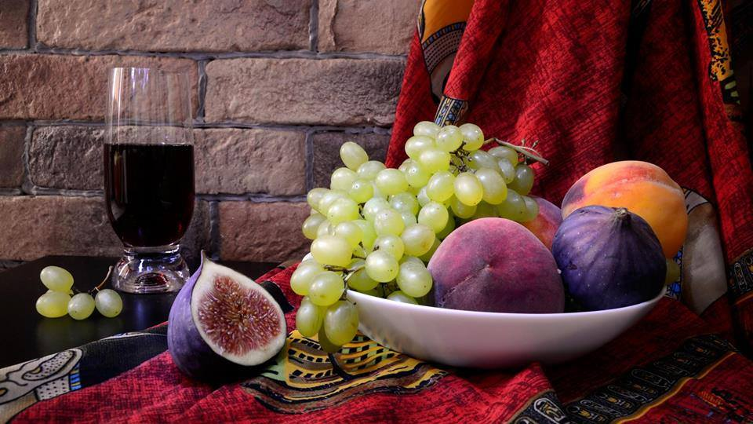

Archive · Greek science communication
There Was a Wasp in Your Fig
The mutualistic life cycle of figs and fig wasps, explained through one of nature's stranger reproductive partnerships.

Original Greek text
Science: ruining everything since 1543. Το ήξερες ότι μέσα στα περισσότερα από τα νόστιμα σύκα που έχεις φάει έζησε και πέθανε κάποτε μια σφήκα; Υπάρχει μια σχέση αμοιβαιότητας σε αυτά τα δύο είδη και χωρίς το ένα δεν θα υπήρχε το άλλο. Τα θηλυκά σύκα, που εμείς τρώμε, μπορούν να επικονιαστούν από τα αρσενικά μόνο με τη βοήθεια των ειδικών αυτών σφηκών. Ο φοβερός κύκλος ζωής των δύο ειδών έχει ως εξής: Η εγκυμονούσα σφήκα εισέρχεται στο σύκο για να γεννήσει, χωρίς να γνωρίζει αν αυτό είναι αρσενικό ή θηλυκό. 1.) Αν είναι αρσενικό, αφού καταφέρει με το ζόρι να φτάσει μέσα, τελικά φτάνει στον τοκετό, γεννά και μετά πεθαίνει. Οι απόγονοι γεννιούνται μέσα στο σύκο και ζευγαρώνουν μεταξύ τους κι ας είναι αδέλφια, γιατί οι σφήκες είναι όλες σαν τους Λάνιστερς (μάλλον αυτό ήθελε να πει στο βίντεο). Anyway, τα αρσενικά προσπαθούν να ξαναβγούν έξω, αλλά παραείναι στενό το πέρασμα και τελικά θυσιάζονται ανοίγοντας το δρόμο για τις θηλυκές, που τελικά βγαίνουν και ψάχνουν άλλο σύκο να γεννήσουν τα δικά τους αυγά. 2.) Αν το σύκο είναι θηλυκό έχει κάποια μέρη, όπως ο στύλος, που δυσκολεύουν την σφήκα να γεννήσει τα αυγά της, οπότε πεθαίνει κι αυτή μέσα στο φρούτο, χωρίς να 'χει γεννήσει όμως. Έχει μεταφέρει επιτυχώς τη γύρη στο φυτό και τελικά αυτό την πέπτει, όχι με πεψίνη αλλά με το ένζυμο ficin, διασπώντας την σε πολλές πρωτεΐνες και κάνοντάς την μέρος του καρπού που τρώμε. Πολλές απορίες γεννιούνται ύστερα από αυτό: Πώς ξέρει κάποιος αν η σφήκα βρίσκεται ακόμα μέσα στο σύκο; Αν ένας vegan καταναλώσει σύκα σπάει τον όρκο του; Υ.Γ. Όχι, τα στρογγυλά πραγματάκια που σου κάθονται στα δόντια δεν είναι αυγά σφηκών, είναι κουκουτσάκια από το φρούτο. Πηγές: https://www.youtube.com/watch?v=ZM17EajwwEY https://animals.howstuffworks.com/insects/fig-wasp.htm?fbclid=IwY2xjawRuoTxleHRuA2FlbQIxMABicmlkETBaT2hISEI1S3NJN1pDZmpqc3J0YwZhcHBfaWQQMjIyMDM5MTc4ODIwMDg5MgABHopGSarWr2zAGvOg7xORIsF_ZQ9JAbSdHvPNZaCjd7Bzn6nekb0hNO4NotUT_aem_p2ISCKHCboME5R0UPXIuLA